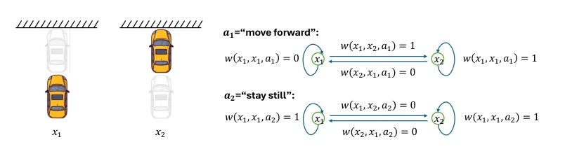
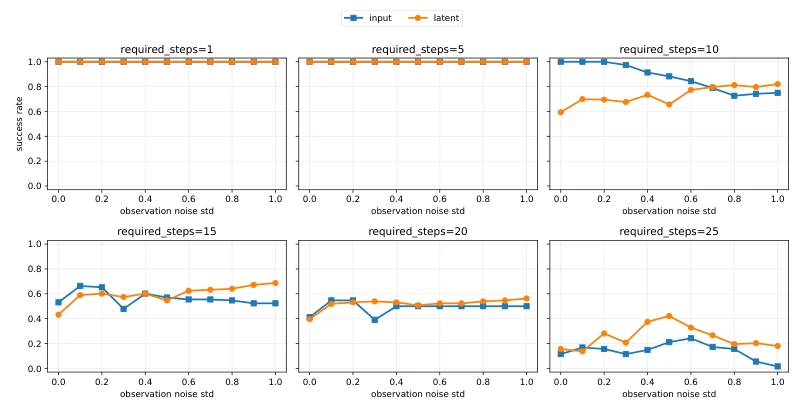

This paper attempts to encase the JEPA world model in a theoretical framework, thereby filling a gap. The authors equate pre-training risk to the low-rank decomposition of the conditional co-occurrence matrix and then derive generalization bounds. The highlight reveals the trade-off between approximation error and sample error introduced by latent dimensions, explaining why JEPA is more robust in long-horizon planning. However, all experiments are conducted on synthetic data, and complex dynamics in the real world are not well verified. Although the theory is elegant, practical implementation depends on engineering. For the community only concerned with empirical success, this theory may be somewhat "too academic", but it is very helpful for understanding the essence of JEPA. Furthermore, deterministic dynamics are assumed, which may be too idealized in real physical systems, as the real world is full of random perturbations. There is still a gap between the "perfect model" of the theoretical community and the "chaotic scene" of the real world.
研究动机Motivation
现有 JEPA 研究多关注表征学习或静态设定，如 Littwin et al. (2024) 分析了隐式偏差，Balestriero et al. (2025) 证明了密度估计，Klindt et al. (2026) 证明了高斯正则化 JEPA 的可识别性。但缺乏对 JEPA 作为世界模型在真实动作规划中泛化能力的理论框架。作者指出，动作规划在潜在空间进行，而评估在输入空间，需要可证明的保证。现有理论无法解释为何 JEPA 能泛化到下游任务，这是本文要解决的核心痛点。特别是缺乏有限样本下的泛化界，无法指导模型设计，比如潜在维度该设多大。
Existing JEPA research mostly focuses on representation learning or static settings, such as Littwin et al. (2024) analyzed implicit bias, Balestriero et al. (2025) proved density estimation, and Klindt et al. (2026) proved the identifiability of Gaussian regularized JEPA. However, there is a lack of a theoretical framework for JEPA's generalization capability as a world model in real-world action planning. The authors point out that action planning is conducted in latent space, while evaluation occurs in input space, requiring provable guarantees. Existing theories cannot explain why JEPA can generalize to downstream tasks, which is the core challenge this paper aims to address. Particularly lacking are generalization bounds under finite samples, which cannot guide model design, such as determining the appropriate latent dimension size.
方法Method
整体框架分为预训练、动作规划和评估。预训练阶段，作者引入条件共现矩阵 M(a)，将 JEPA 风险等价于该矩阵的条件谱图学习问题（Theorem 3.1）。这相当于对动作条件共现矩阵进行低秩分解。规划阶段在潜在空间优化动作序列，最小化预测潜在状态与目标潜在状态的距离。评估阶段通过贝叶斯公式将潜在规划映射回输入空间计算成功率。创新点在于建立了预训练风险与下游规划 regret 的数学联系（Theorem 4.1/4.2），并推导了有限样本下的泛化误差界（Theorem 4.5/4.6），量化了潜在维度 k 对近似误差和样本误差的权衡。近似误差随 k 增加而减小，样本误差随 k 增加而增大，揭示了最优 k 的存在性。
The overall framework is divided into pre-training, action planning, and evaluation. In the pre-training phase, the authors introduce the conditional co-occurrence matrix M(a), equating JEPA risk to the conditional spectral graph learning problem of this matrix (Theorem 3.1). This is equivalent to performing low-rank decomposition on the action conditional co-occurrence matrix. In the planning phase, action sequences are optimized in latent space by minimizing the distance between predicted latent states and target latent states. In the evaluation phase, latent planning is mapped back to the input space via Bayes' rule to calculate the success rate. The innovation lies in establishing the mathematical connection between pre-training risk and downstream planning regret (Theorem 4.1/4.2), and deriving generalization error bounds under finite samples (Theorem 4.5/4.6), quantifying the trade-off of latent dimension k on approximation error and sample error. Approximation error decreases as k increases, while sample error increases as k increases, revealing the existence of an optimal k.

Figure 1: An illustrative example of the graph relationship between world model inputs. (Left) Ob- servations of a car-moving example, where x1 and x2 represent two possible states of car locations. (Right) The transition probabilities from xi to xj, i, j ∈{1, 2} are conditioned on the actions a1 and a2. The conditioned co-occurrence matrix M(a) is formed by assembling w(xi, xj, a).
Experiments are conducted in synthetic continuous control environments (2D point mass system), containing task-related features, interference features, and random noise. Input-level reconstruction is compared with latent-level prediction. The metric is the success rate under different noise levels and planning steps. Results show that for short-horizon tasks, both performances are comparable, but under high noise and long planning steps (e.g., 25 steps), latent prediction is significantly superior to input reconstruction. This verifies the theory: latent models can filter irrelevant noise, reduce approximation error, and are suitable for long-horizon planning. Ablation studies are not detailed, but the main results support the trade-off relationship derived in the theory.

Figure 2: Comparisons between latent- and input-level predictive models on synthetic data under various planning steps and noise levels. Both methods perform well on short-horizon tasks, while latent prediction shows advantages under higher noise and more required planning steps.